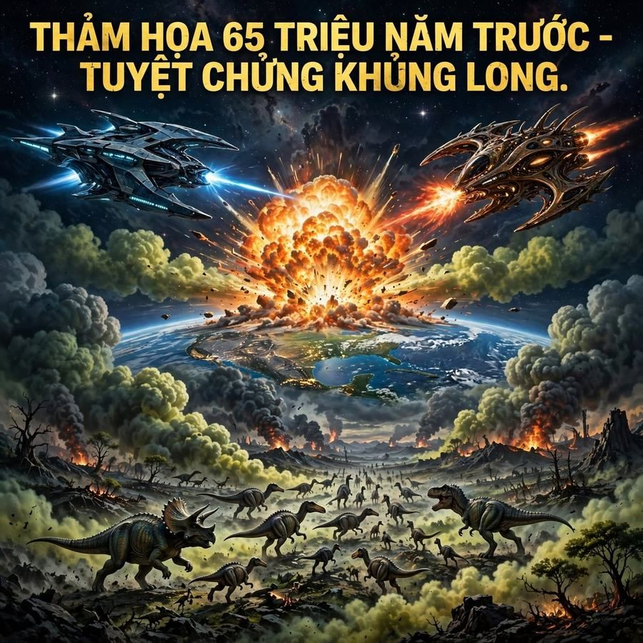
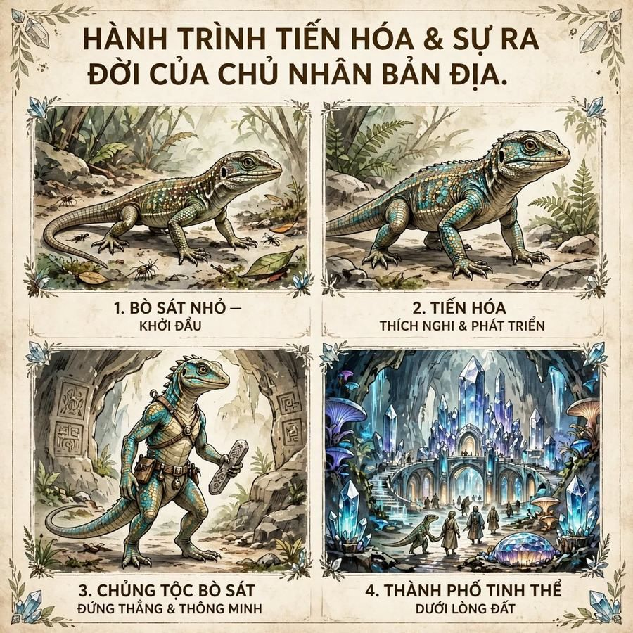
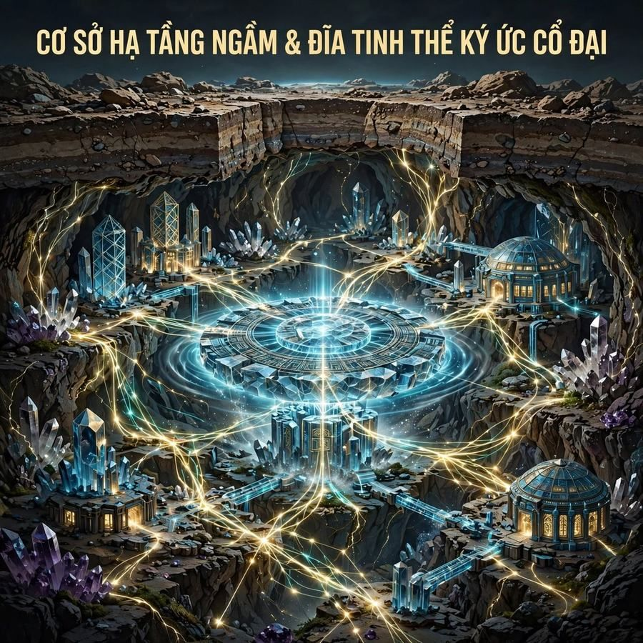
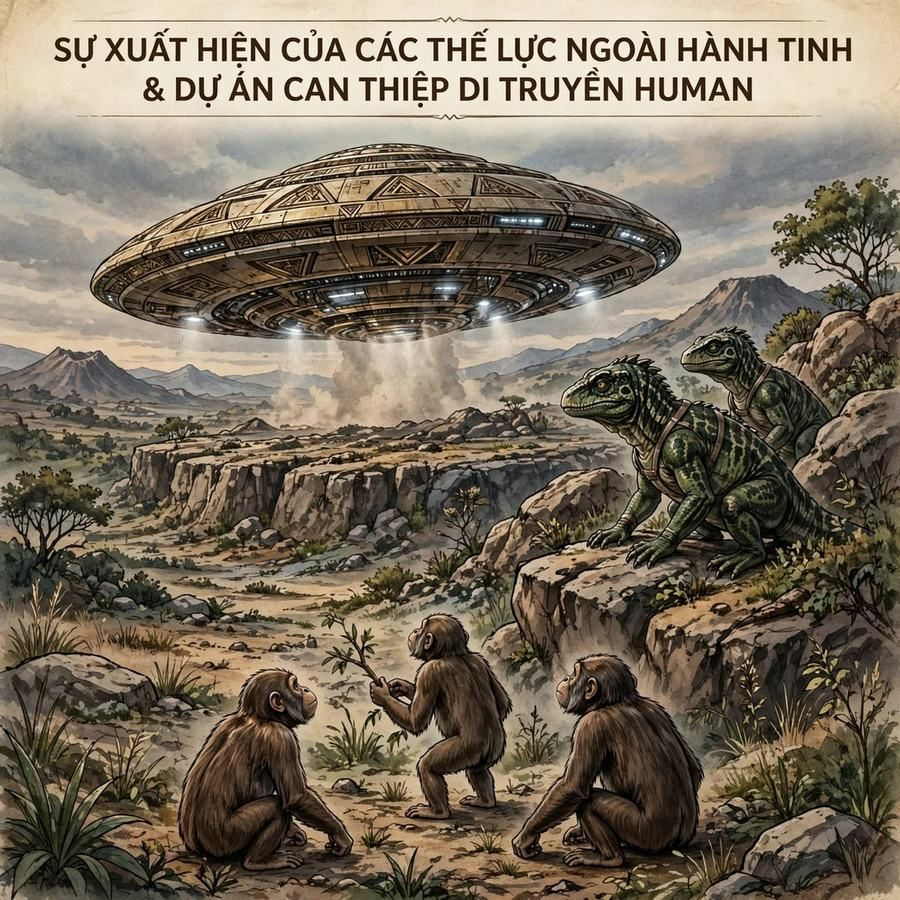
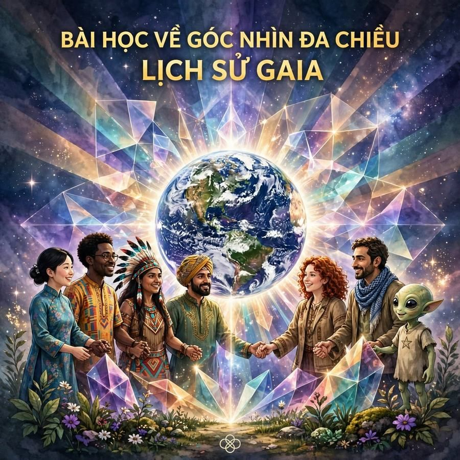

Trang chủ / Chuyên đề 4: Văn Minh Lòng Đất / Kỳ 32
Chuyên đề 4 · Kỳ 32 / 90
NGUỒN GỐC CHỦNG TỘC BÒ SÁT BẢN ĐỊA & THẢM HỌA CHIẾN TRANH CỔ ĐẠI 65 TRIỆU NĂM TRƯỚC

Ở Kỳ 1, chúng ta đã cùng nhau mở ra bức màn bí mật về cấu trúc Trái Đất Rỗng (Hollow Earth), Mặt Trời Nội Thể và mạng lưới giao thông ngầm siêu hiện đại Agartha kết nối xuyên đại lục.
Khi tìm hiểu về thế giới bên trong lòng đất, một trong những ẩn số gây bàng hoàng nhất đối với khoa học lịch sử chính là sự hiện diện của Chủng tộc Bò sát Bản địa Trái Đất — những sinh mệnh đã sinh sống, tiến hóa và xây dựng văn minh dưới lòng đất từ hàng triệu năm trước khi con người xuất hiện.
Khác với các chủng tộc Bò sát xâm lược từ ngoài vũ trụ (như phe Ciakahrr hay Draco), chủng tộc Bò sát bản địa coi Trái Đất là nhà nguyên thủy của họ. Sự thật đằng sau thảm họa tuyệt chủng của khủng long 65 triệu năm trước là gì? Cuộc đại chiến giữa hai phe phái ngoài hành tinh để tranh giành tài nguyên đồng trên Trái Đất đã diễn ra ra sao? Hành trình tiến hóa tự nhiên kéo dài hàng chục triệu năm của chủng tộc bản địa diễn ra như thế nào? Và góc nhìn của họ về dự án can thiệp di truyền gia tốc tạo ra loài người ra sao?
Hãy cùng dấn thân vào Kỳ 2: Nguồn Gốc Chủng Tộc Bò Sát Bản Địa & Thảm Họa Chiến Tranh Cổ Đại 65 Triệu Năm Trước để khám phá trang sử bị lãng quên của hành tinh Trái Đất!
✦ ✦ ✦1. THẢM HỌA 65 TRIỆU NĂM TRƯỚC: NGUYÊN NHÂN THỰC SỰ GÂY RA SỰ TUYỆT CHỦNG CỦA KHỦNG LONG
Khoa học bề mặt hiện đại thường giải thích sự tuyệt chủng của loài khủng long cách đây 65 triệu năm là do một trận thiên thạch ngẫu nhiên va chạm vào Trái Đất. Tuy nhiên, các hồ sơ giải mật vũ trụ tiết lộ một sự thật hoàn toàn khác biệt.
A. Cuộc Đại Chiến Ngoài Hành Tinh Đầu Tiên Trên Trái Đất
- Không Phải Thảm Họa Thiên Thạch Tự Nhiên: Sự hủy diệt loài khủng long xuất phát từ một cuộc chiến tranh không gian tàn khốc giữa hai chủng tộc ngoài hành tinh hùng mạnh diễn ra ngay trên quỹ đạo và tầng khí quyển cao của Trái Đất.
- Hai Phe Xung Đột: Cuộc chiến nổ ra giữa một chủng tộc dạng người (Humanoid) cổ xưa đến từ hệ sao Procyon và một chủng tộc Bò sát tiên tiến đến từ một dải thực tại không gian khác.
B. Mộc Tiêu Tranh Giành: Tài Nguyên Đồng (Copper) Nguyên Thủy
- Giá Trị Của Đồng Trong Công Nghệ Siêu Chiều: Cả hai chủng tộc ngoài hành tinh kéo đến Trái Đất không phải vì hệ sinh thái sơ khai, mà vì lượng tài nguyên Đồng tự nhiên khổng lồ dưới lòng đất.
- Cơ Chế Tạo Nguyên Tố Siêu Bền: Khi kim loại Đồng kết hợp với từ trường cao tần và trường bức xạ hạt nhân theo các góc hình học chuẩn xác, nó tạo ra các nguyên tố siêu bền vững cung cấp năng lượng cho các công nghệ du hành xuyên không-thời gian.
C. Vụ Nổ Hạt Nhân Toàn Cầu & Đêm Đen Sinh Học
- Vũ Khí Nhiệt Hạch Thao Túng Môi Trường: Cuộc thương lượng thất bại đã dẫn đến việc phe phái ngoài hành tinh kích hoạt vũ khí hạt nhân/nhiệt thạch nổ tung trên đại dương.
- Sự Sụp Đổ Của Loài Khủng Long Khổng Lồ: Vụ nổ tạo ra đám mây phóng xạ bao phủ toàn cầu, làm ngắt kết nối ánh sáng Mặt Trời và đẩy nhiệt độ Trái Đất xuống mức đóng băng. 24 trong số 27 phân loài bò sát nguyên thủy cùng đại đa số các loài khủng long khổng lồ đã bị xóa sổ hoàn toàn trong thảm họa này.

2. HÀNH TRÌNH TIẾN HÓA NGUYÊN THỦY & SỰ RA ĐỜI CỦA CHỦ NHÂN BẢN ĐỊA
Sau khi hai lực lượng ngoài hành tinh rời bỏ Trái Đất vì môi trường bị nhiễm độc phóng xạ nghiêm trọng, sự sống còn lại trên Trái Đất bắt đầu quá trình tự chữa lành và tiến hóa.
A. Sự Thích Ứng Của 3 Phân Loài Bò Sát Sống Sót
- Sự Sinh Tồn Qua Hàng Chục Triệu Năm: 3 phân loài bò sát nhỏ còn sống sót sau thảm họa đã chui sâu vào các hang động ngầm và học cách thích nghi với sự biến đổi khí hậu khắc nghiệt.
- Tự Thay Đổi Cấu Trúc Sinh Học: Nhờ khả năng điều biến nhiệt độ cơ thể và tự thao túng mã gen nội tại, họ đã vượt qua các thời kỳ băng hà, phân rã các gen dễ tổn thương và phát triển trí tuệ vượt bậc.
B. Hình Thành Chủng Tộc Bản Địa 10 Triệu Năm Trước
- Chủ Nhân Hợp Pháp Của Trái Đất: Khoảng 10 triệu năm trước Công nguyên, 3 phân loài này đã hợp nhất hoàn toàn thành một chủng tộc Bò sát bản địa duy nhất (mang các đặc tính sinh học máu nóng, da vảy mịn, diện mạo cân bằng).
- Xây Dựng Văn Minh Khi Con Người Chưa Xuất Hiện: Trong khi các tổ tiên thú có vú sơ khai của con người vẫn đang sống dạng vượn trên cây, chủng tộc Bò sát bản địa đã phát minh ra công nghệ du hành không gian, thuộc địa hóa các vệ tinh trong Hệ Mặt Trời và xây dựng các đại đô thị tinh thể dưới lòng đất!

3. CƠ SỞ HẠ TẦNG NGẦM & ĐĨA TINH THỂ KÝ ỨC CỔ ĐẠI
Tri thức và lịch sử của chủng tộc Bò sát bản địa được lưu giữ cẩn trọng qua các thời kỳ biến động địa chất.
A. Đô Thị Tinh Thể Trong Vỏ Trái Đất
- Mạng Lưới Trú Ẩn An Toàn: Họ chuyển toàn bộ văn minh xuống sinh sống bên trong vỏ Trái Đất, nơi môi trường nhiệt độ, từ trường và nguồn năng lượng luôn được duy trì ổn định, tránh xa những biến động khí hậu nguy hiểm trên bề mặt.
- Làm Chủ Năng Lượng Từ Trường Gaia: Họ sở hữu hiểu biết sâu sắc về hệ thống kinh mạch địa từ (Ley Lines), sử dụng công nghệ thạch anh để thu hoạch điện năng trực tiếp từ không khí và từ trường Trái Đất.
B. Cổ Vật Tinh Thể Ký Ức 16.000 Năm Trước
- Đĩa Ký Ức Bằng Tinh Thể Từ Tính: Lịch sử chi tiết về cuộc chiến hạt nhân 65 triệu năm trước được họ phát hiện lại qua một cổ vật tinh thể từ tính nguyên vẹn chứa dữ liệu mã hóa phân tử do những sinh mệnh thời cổ đại để lại.
- Minh Chứng Cho Lịch SỬ Thật: Cổ vật này cùng với việc giải mã DNA đã giúp chủng tộc bản địa nắm rõ toàn bộ tiến trình lịch sử khởi nguyên của Trái Đất mà không bị ma trận bóp méo.

4. SỰ XUẤT HIỆN CỦA CÁC THẾ LỰC NGOÀI HÀNH TINH & DỰ ÁN CAN THIỆP DI TRUYỀN HUMAN
Mối quan hệ giữa chủng tộc Bò sát bản địa và loài người Trái Đất trở nên phức tạp khi các lực lượng ngoài vũ trụ tiếp tục can thiệp vào hành tinh.
A. Sự Hạ Cánh Của Các Thực Thể Can Thiệp (Illojim / Anunnaki)
- Xâm Nhập "Vườn Thú Ngân Hà": Cách đây khoảng 1,5 đến 3 triệu năm, các đoàn tàu ngoài hành tinh (được gọi là Illojim hay Anunnaki) đã hạ cánh xuống Trái Đất.
- Bất Chấp Sự Hiện Diện Của Chủng Tộc Bản Địa: Bất chấp việc chủng tộc Bò sát bản địa đã có mặt và làm chủ Trái Đất từ lâu, phe can thiệp vẫn quyết định chọn các loài linh trưởng bản địa để khởi công dự án lai tạo di truyền.
B. Nhìn Nhận Về Sự Tiến Hóa Tăng Tốc Của Con Người
- Sự Tiến Hóa Bất Thường Trong Tự Nhiên: Chủng tộc bản địa nhìn nhận rằng: Sự tiến hóa của con người từ vượn thành sinh mệnh có trí tuệ chỉ trong vòng 2–3 triệu năm là một tiến trình hoàn toàn bất khả thi trong tự nhiên.
- Sản Phẩm Di Truyền Phục Vụ Nô Dịch: Loài người Trái Đất là kết quả của việc can thiệp kỹ thuật di truyền nhân tạo do các lực lượng ngoài vũ trụ thực hiện để biến con người thành lực lượng lao dịch và lính đánh thuê. Sự tranh chấp lãnh thổ giữa chủng tộc bản địa và phe can thiệp đã dẫn đến nhiều cuộc chiến đẫm máu được ghi lại trong các thần thoại cổ đại.

5. LỜI KẾT KỲ 2: BÀI HỌC VỀ GÓC NHÌN ĐA CHIỀU LỊCH SỬ GAIA
Kỳ 2 của chuyên đề 4 khép lại mang đến cho chúng ta những suy ngẫm sâu sắc về bức tranh tiền sử Trái Đất:
- Trái Đất Sở Hữu Nhiều Tầng Lớp Lịch Sử: Nhân loại Trái Đất không phải là cư dân duy nhất hay đầu tiên xuất hiện trên hành tinh này. Gaia là một ngôi nhà chung chứa đựng nhiều chủng tộc, nhiều dải mật độ và nhiều nền văn minh nối tiếp nhau.
- Tỉnh Thức Khỏi Sự Ngu Muội Lịch Sử: Khi chúng ta bước ra khỏi tư duy kiêu ngạo cho rằng mình là chủ nhân duy nhất, chúng ta sẽ bắt đầu thấu hiểu trật tự Đa Vũ vũ trụ, mở rộng trái tim từ bi và sẵn sàng sống hòa hợp với tất cả các dạng sống trên hành tinh Gaia!
